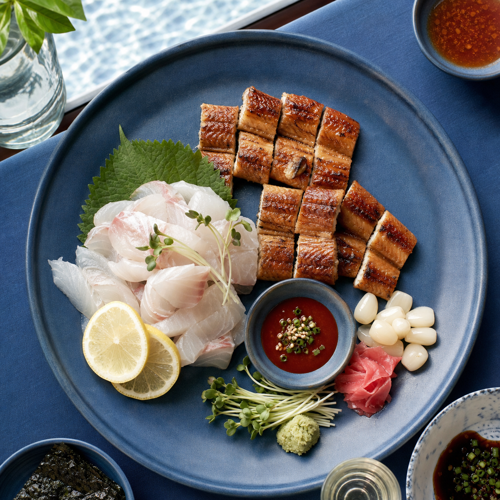

어떤 정보를 찾고 있나요?
맛집 추천 모드를 선택했어요. 해수욕장과 여행 날짜를 골라 주세요.
맛집 픽
이번 여행의 제철 음식
근처 맛집 추천 순위
맛집 순위·메뉴·거리 정보는 발표용 예시 데이터입니다. 방문 전 실제 영업 정보를 확인해 주세요.
쓰레기통 알리미
아이콘을 눌러 위치 안내를 확인하세요.
🗑️ 쓰레기통 위치(프로토타입 예시)
지도 위 아이콘을 누르면 위치 설명이 표시됩니다.
현재 위치 권한을 허용한 뒤, 쓰레기통 아이콘을 선택해 길찾기를 이용하세요.
이 지도와 쓰레기통 위치는 서비스 시연용 예시입니다. 실제 위치는 현장 안내를 확인해 주세요.